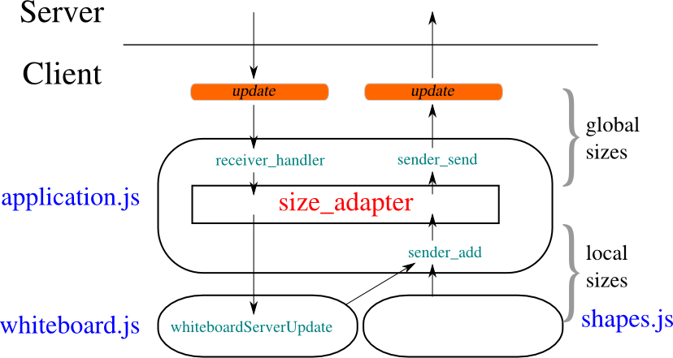

In this section I will present the main structures thought to organize
the code. The order of the subsections reflects the importance of each
topic. The first two subsections deal with those structures limited to
the client or the server side, while the following sections present
topics which involve both sides of the application.
Following a general rule of network protocols, I've tried to move the
biggest part of the computational load towards the network boundaries,
that means towards clients, leaving it off from the server.
Current hardware performances for an average web browser aren't an
heavy limit for this kind (strongly interactive) of applications, or
at least I couldn't observe any performance problem related to
javascript on the testing machine (and virtual machine), which runs on
quite old hardware (see Hardware).
The biggest problem I met was therefore that of readability and
decomposition of the client side code.
The starting code was all based on global variables, and I choosed to
proceed by steps, instead of trowing away the existing structure. The
resulting code has an hybrid programming paradigm, being object
oriented just in some of his parts .
The javascript code is divided among files in a way that follows the
graphical division of the user interface, as shown in the image below:
The javascript function definitions can be found on the file
corresponding to the zone of the page containing the html element to
which the method is associated. For example, this html code can be
read about the "Import" button, which is contained into the menu:
<button onclick="show_div('menu_import', true)">Import</button>
Since the "Import" button is contained into the menu, the programmer
will find the show_div function declaration inside menu.js.
Another consequence of the shown division is that there are two
javascript files, login.js and application.js, which are
associated to a whole html page. Thus the initialization functions for
each page are contained into the corresponding file; see the next
section for details about the one contained in whiteboard.js,
which is the more complex.
To be complete, it's better to immediately consider another image
which introduces also those javascript files not directly associated
to a visible surface of the user interface. The image illustrate the
use relationships between the javascript files, a very useful
information while browsing the code:
An arrow from a start file to an end file means that the code of the
start file calls some functions which are defined into the end
file. Two new informations come from the structure of the diagram:
- the role of common.js that is like a little shared library for
common tasks (the most important thing, it contains the channel
class)
- the presence of the shapes.js file (containing the shape class
and all shape objects derived from that), which is used exclusively
by functions into whiteboard.js
The introduced division of client side code it not totally rigid,
there are still dependencies, here and there, between variables
defined into different files. I've tried to collect into common.js the
variables, functions and objects used by several files, like the
global object g holding all global variables, and the channel
and signer objects.
On the purpose of decomposing the client logic, also global variables
are defined within the files where they are used. When the client side
state is initialized, several functions are called, each one to
initialize the variables belonging to a file.
The main initialization function is defined into application.js;
it initializes the variables defined into application.js and than
calls the initialization functions for the file whiteboard.js and
menu.js:
window.onsvgload = function() {
...
initWhiteboard();
initMenu();
...
};
A similar approach is used when an update is received by the
client. The receiver_handler function (into application.js)
calls the specific functions belonging the the files whiteboard.js
and chat.js, since within those files the developer will found all
functions needed to process the update of the right type:
function receiver_handler(){
...
if (action == 'chat')
chatServerUpdate(madeBy, objId, parameters, time);
else{
...
whiteboardServerUpdate(objId, page, action, parameters);
}
...
}
Note that the approach used for the initialization and for the
processing of an update is a total waste of resources, from the
computational point of wiew. It is just an effort to organize the code
for the developer.
The javascript language is very flexible when it comes to object or
class definition, due to his prototypal model and the possibility of
dynamically add member functions and internal variables to the
objects. Although an uniform programming style is important for
readability and to avoid mistakes, the few javascript objects are
defined in different ways, depending on their lifecycle.
All the objects that will be created dynamically (line, circle
and all the shapes, and the shape and channel classes) are
defined through their constructors, while permanent singleton objects
(g['signer'], g['sender'], g['receiver'], g['pages']
and g['size_adapter']) are directly built and assigned to the
global variable where they will remain.
The channel class provides an ajax channel to the server, with some
functions to send the request, handle errors, and retry the request
after a timeout. A channel object is contained (and used) by all other
objects which need to exchange data with the server in an asynchronous
manner.

The responsabilities of the channel class are:
- Create, send and receive an ajax request in a way which is
supported cross-browser
- Handle the case of timeout of the sent request, sending again the
same request
These functions are used by the login and sender objects to
send individual messages, and by the receiver and signer
objects to send messages in a cycle.
The structure of objects using channel is a little messy, because
the channel object needs methods which are exposed on the global
scope, in order to assign them as handlers for timeout and ajax
statechange events. For example, the g['sender'] object defines
two global methods that are assigned to the channel object during its
initialization (code taken from application.js):
// Sender initialization
g['sender'].channel =
createChannel(sender_handler, sender_timeout, 10000, send_par);
// Sender object and methods
g['sender'] = {
...
};
function sender_timeout(){
g['sender'].channel.handle_timeout();
}
function sender_handler(){
...
}
The methods must be defined outside of the object, which is not very
elegant, but it is the only way. Moreover, you can observe that the
sender_timeout method just calls a method into the channel
object. This is even less elegant and this is done by all objects that
use a channel object, because it is difficult in javascript to assign
an inner method of an object as handler for an event like the timeout.
Client send buffer and the sender object
The channel class is used by two important objects, the sender and
the receiver; both of them are defined into the file
application.js. The channel class itself handles the failure and
resend of ajax requests, but the sender object needs anyway a buffer
to temporarily store the updates produced by the user.
The function that adds a new update to the buffer (server_add) has the
following interface:
sender_add(action, parameters, varidObj, async)
All parameters but action are optional, and the last (asinc)
is useful to add a new update line into the database without trying to
flush it. Indeed, sender_add usually tries to flush the buffer
right after it's execution, but when the user edits a shape, for
example, it is better if the old shape's deletion and the new shape's
creation are sent to the server at the same time.
The sender channel (like all other objects that use the channel
class) waits that an old ajax request has succeeded before sending a
new one. When the sender object receives a response from the
server, it checks its buffer for updates collected in the meantime
since the request was sent.
Here it is the relative code (into application.js). The response
handler (sender_handler) can call again the send function (line 7):
1 function sender_handler(){
2 var response = g['sender'].channel.received();
3 if(response !== false){
4 // If still have data to send (added while waiting the server
5 // response)
6 if (g['sender'].line_buff.length > 0)
7 sender_send();
8 }
9 }
For all objects which use the channel class, the handling of a
failure (a false response received by the channel class) is a
delicate matter. A false response is returned every time that, for
example, the readyState of the response is not the right one, so the
handler receiving from channel should simply ignore the call and
do nothing. This interface, however, is likely to be changed because
explicit errors (see next section) are better handled by the specific
handler receiving from channel.
Handling of AJAX errors
The channel.received method is called by channel users each
time that the XMLHttpResponse object changes its state, and the
ready state is only the forth, so many times the method simply
returns the false value to tell to its caller that the moment
isn't already arrived.
Besides receiving a correct ready response, several kind of errors can
occurr while the channel class is awaiting. First I will present the
different kind of errors, and then I will tell how they are handled.
malformed XML This can cover a variety of errors: during the development these are
usually php errors which output the details of the error instead of
the XML response. Sometimes, with explorer (6), these errors can be due
to a malformed ajax request, which occurs randomly and which is not
repeated by the browser if the request is resent.
A problem in the handling of this errors is that there isn't a
method to verify the valid XML structure of the response (into the
class XMLDocument), so an exception could be risen when upstream
code tries to parse the received response. Thus to try to locate XML
errors, I try to access to the last nodes or to the whole first
level of child node, but this method is not sure, it depends from
the parser implementation:
try{
var response = this.request.responseXML.documentElement;
// These are used to force explorer (and other
// browsers) to parse the XML document to spot errors
response.lastChild;
response.childNodes;
}
catch(e){
// *malformed response*: this could even be a php
// error. Firefox raises an exception on
// this.request.responseXML while Explorer should raise an
// exception on response.lastChild
var msg = 'A server error occurred:\n\n'+this.request.responseText;
}
Http errors They are signaled to the client side code with a request whose state
is 'ready' but whose 'status' is different from 200. This includes
the case of an unreachable server (http status '0').
Timeouts When the response doesn't comes within the timeout.
Explicit errors These are errors sent on purpose by the server
to the client, in order to show an error message client-side or to
impose a behavior (for example: logout). This is told to the client
through an error XML tag.
About the handling of these errors, the first distinction is about the
explicit errors: they are different within different channels, so
they are handled outside of the channel. Other kind of errors may
occur with all channels and are handled within the
channel.received method.
A malformed XML response or an http error are handled the same
way: a message is prompted to the user, trying to be as clear as
possible, and he can decide if to repeat the request or to give up (in
this case he will be logged out from the whiteboard). This behavior
works well with the case of a server complaining for a malformed ajax
request, which occurs randomly with explorer (this triggers a
malformed XML error). This works well also when an http error is given
due to a server not responding (the user may notice, for example, that
his network is down and retry).
A timeout error simply triggers a new send with the same
parameters, and the user is warned with a subtle notification but he
doesn't has to decide anything.
The deletion of a whiteboard on the client side
The deletion of a whiteboard while several users are working on it is
an event which can lead to the failure of several server side
operations. Simultaneusly, several ajax requests made from the client
side may fail, and I decided to not take care of each one of these
failures, but to rely on the failure of the whiteboard's heartbeat:
the 'receive cycle'.
The whiteboard is almost always awaiting for a response from
the server, because of the g['receiver'] object and the receive
cycle it manages, so I demanded to this object the handling of the
whiteboard deleted explicit error (see section above), which
leads to the logout of the user from the whiteboard. Other client-side
failures due to a deleted whiteboard are simply ignored, relying on a
prompt reaction of the receiver object.
The shape class came from the attempt to simplify the code running
into the whiteboard. This class is used only through its derived
classes (it can be seen as an abstract class) and by the functions
into the file whiteboard.js.
This diagram shows only the public methods, for the protected ones see
the next figure. The shape class has mainly three virtual methods
(mousedown, mousemove, mouseup), which must be overridden by the
derived shapes, even if the language syntax doesn't provides any
keywork to indicate virtual methods.
The idea behind this class is that when an user chooses a tool that
corresponds to a shape, all mouse (and keyboard) actions inside the
canvas get forwarded to the corresponding shape class, and the class
decides how to handle the mousedown, mousemove, and mouseup
events. This structure aims to achieve both modularity and flexibility
in the definition of classes.
There are two kind of shapes derived from shape:
- dynamic shapes: they are the most part. In this case a shape
corresponds tightly with an SVG element, and many methods can
automatically copy attribute values from the shape to the server or
to the SVG element. The aspect of these shapes changes while the
user is creating them, but they are created all together on the
canvas of the other users receiving the update.
- static shapes: these are the text, link, and image
shapes. They are created within a single function, because the
intermediate state is constituted by a text that the user changes
into the textarea. For these shapes, the correspondence with an SVG
element is less tight, because their actual structure on the svg
canvas is more complex; this is the reason why all static shapes
override the server_create method.
This distinction doesn't corresponds with any structure into the code,
but it helps to understand the different use of shape protected
methods on part of his derived shapes. These protected methods are the
part of the base class which can be used by several shapes with a
similar behavior.
shape protected methods are defined on two levels, a first level
of methods which is used by the second level. Usually, derived shapes
use the second level, but sometimes they can need customization and
rise up to the first level (this is the case of the path shape,
which needs to build custom groups to handle the creation of
multipaths). This simple diagram shortly describes the relationships
between the protected methods into the shape class:
The methods on the first column can be thought as a first level, and
the ones on the second column as a second level. These are not all
protected methods (some are public), but they are all methods which
are reused inside the derived shapes.
The meaning of the words into the ellipses is:
- shape: the shape object (has attributes as object properties)
- element: the SVG element (his attributes correspond to visual properties)
- server: the server update (attributes are encoded as an ordered array)
This skecth can be useful to get an idea of the overall structure, but
many details are missing which can be found in the code.
Random remarks on the structure of the shape class
The methods open_shape() and close_shape() handle the open
flag; this is read upstream to know if the shape is open (an user
can't change his tool if he has an unclosed shape).
The method copy_shape sets also the edit flag true. All
derived shapes can change their behavior when the shape is in edit
mode.
Usually a shape remains alive during all the time while the
corresponding tool is selected, continuously generating new elements
and server updates. On the other hand, with the edit tool a shape is
copied by an existing one, and it shouldn't generate new shapes after
that the editing is finished. For this reason, when an edited shape is
closed, its active flag is set to false, so that the upstream code
can understand that no more shapes of that type should be created
(close_shape method).
Even if I couldn't find a clear specification of the behavior of the
javascript language with respect to concurrency, from several articles
found on the web and from the practice it results that javascript
doesn't supports preemption, thus an event is handled after that the
current block has ended.
To avoid concurrency problems, is thus necessary to mantain the
coherence of global variables within each function that changes
them. This is easier for the new parts of the code which are
structured following the object oriented paradigm.
Sometimes (sender_handler function inside application.js,
login_handler function inside login.js) when receiving an ajax
response from the server, the underlying datas are checked, to be sure
that the response is still valid or to know if a new request should be
sent.
The server side is decomposed following a procedural paradigm, which I
think is better to describe the control flow in this case. However, to
reduce the complexity of function interfaces, some of their parameters
have been packed into an associative array (see The client identifier).
The choice of a procedural decomposition came from the consideration
that the server code doesn't actually follows complex control flows,
but instead the whole logic is started with each user request and ends
with a response to that user, changing eventually the database as an
important side effect.
The execution flow is described in its principal steps into the
main() function, where I tried to balance the readability (that
means hiding the code by incapsulation) with the expression of the
underlying logic.
To achieve this goal, there is a separation of functions into groups,
and the structures into main() do the association between the user
request and the corresponding functions.
The function used by main() are mainly grouped into two types:
- modifying the database (file updates.php): The functions that
modify the database are all defined into udpates.php, so that
the database structure is somehow encapsulated into this file. The
file contains the functions called by main(), but it contains
also functions called just internally, and defined to reuse the
code or to improve the readability
- formatting the output (file markup_send.php): Here, all the
functions that write HTML or XML are defined, to wrap the data
received upstream by main(), and to send them to the user.
Sometimes, this division turns into an excessive rigidity, and
sometimes (in the case of export_chat) a function into updates.php
also cares for formatting, but this remains a guideline into the
structure of the server side code.
With the grouping of functions into the files and the procedural
decomposition model I used, it is easy to follow the execution flow
through the various files that compose the server side code. The
following diagram shows the use relations between server side files
(the .php extension is omitted) when an user sends a request. An
arrow starting from a file and arriving into another file means that
the first file is using a function from the second one.
As can be seen, from the main file the execution flow goes to the
update functions, which in turn call the functions from
file_access to read and write the update database copy on the
disk. When the update functions give back the control flow to the
main file, it uses the returned values to call the functions into
markup_send, to send back the response to the user.
The presented function groups correspond also with two steps of the
server operation, and so they can be found used into two successive
switches inside main(): a firs one based on the mode parameter
that chooses among which update function to use, and a second one
based on the $o['type'] (output type) parameter that chooses among
which markup send function to use .
The markup send step is born to collect formatting functions that
were common between several modes, so the output functions for the
export mode remain outside from this step: they stay into the
export branch of the update switch, since they are used just
there. The export mode is quite different from the others, and the
Export mode and draw_image section covers its characteristics.
The drawback of a procedural decomposition paradigm is that many
functions belonging to the same processing step could require the same
data set, resulting in big and redundant function interfaces. For
example, the functions belonging to the update step often need
informations about the user which sent the request, his user id (to
improve performances reducing database search), and the name of the
whiteboard where he is operating.
I packed all these variables into the variable $client_id, which
is a parameter of all the functions of the update step. The variable
is sent by the client or produced by the login function in the
form of a joined array with the structure:
<user id> . '_' . <user name> . '_' . <whiteboard name>
And it is parsed by parse_client_id into an associative array, to
provide textual keys to the functions. This array can be found as a
parameter of almost all update functions.
This mode deserves a specific coverage, because is more complex than
all the other methods and requires a whole file (draw_image.php)
just to accomplish the operations required to export the whiteboard
contents.
The complexity arises from two factors:
- Database structure
- The server doesn't actually sees the current state of the
whiteboard, but it simply keeps the received updates. Thus, only
for this mode, it must walk through the whole database and
transform the update list into a structure reflecting the status
(the $objects variable). This task has been incapsulated into
the export_whiteboard function (updates.php).
- Format encoding
- A change from one format to another, which is simple a matter of
changing a form value for the user, entails whole sets of
different operations into the server side code, since the functions
may change for each object type. This task has been incapsulated
into the draw_image function (draw_image.php).
The export_whiteboard function does also all operations which will
be useful for every kind of export format, for example it parses
complex action parameters and it translates the sizes from global
units to local units (see Global and local measure units); this
makes the two tasks (the production of the $objects variable and
its output as a file for the user) tightly coupled but the division
between them seems reasonable to me to organize the code.
All the code for the export mode is strongly dependent by the position
of the parameters into each update string. This is a problem for
readability and maintainability, that I discuss into Joined arrays for
the action parameters, where I introduce some ideas to change the
current structure.
Now that this mode has been presented, I can show the full use diagram
between server side files, including even those files which are
secondary and related to this specific mode:
On the server side, concurrency problems arise for the access to the
shared files on the disk (see stored data for an overview of such
files). As seen into the section Function groups and server side
files, all the functions that read and write disk files are grouped
together into the file file_access.php, so these are the functions
which also handle the problem of concurrency . All
these functions are called just by other functions defined in
updates.php, with the exception of check_files().
First of all, some of the files do not present concurrency problems:
the permissions file is read-only (writable only by hand by the
administrator) and the log file is write-only.
The changing and shared files are:
- the passwords file
- the whiteboard database for each whiteboard
- the image folder for each whiteboard
The passwords file and the whiteboard databases may change
their content, while both the whiteboard databases and the image
folders may exist or not exist at all.
Encoded files
The passwords file and the whiteboard database files have the
common property of being an encoded form of a php array. The functions
accessing to these files (whiteboard_create, whiteboard_delete,
file_create, file_get and file_put) handle both the variable
encoding/decoding and the concurrent access.
Use of file get and put
Both the definition and the use of file_get and file_put are
straightforward . Into the file updates.php, all
actions executed between a write file_get and a file_put can be
thought as acting on an exclusive locked version of the database. I
wrote write file_get because this function can be called with a read
(r) or a read write (rw) value as mode argument; when it is
called with a rw mode, it returns also an handler, which must be
given back to file_put to terminate the critical section.
list($h, $d) = file_get($wb_file, 'rw');
...
file_put($h, $d);
The second parameter of file_put is useful to tell to the function
that the data have been modified, and so they must be written on the
file. Sometimes, functions into updates.php can open the file with
the 'rw' mode but don't actually modify the data, in this case
they can use file_put($h) simply omitting the second parameter.
Double locking level
Each whiteboard database file can be accessed independently, so
the locking should be done singularly over each of those
files. However, since those files can be existent or not, a prior
atomical check must be done on file existence, so the locking of
whiteboard database files has two levels. Since the passwords file
is accessed through the same functions, the double lock is used also
for that file, even if this is not strictly necessary.
The files mentioned above are accessed through the following four
functions, which use a global lock file and a local lock file for each
operation:
- whiteboard_create, whiteboard_delete, file_create (for passwords file)
- file_get, file_put
The following image represents the use of lock files with symbols, to
easily check that they are used properly. The global lock (the red
one) is used to protect file creation and deletion, that is changes to
the filesystem, while the local lock is used for changes within a
specific whiteboard database or folder.
The existence of different local locks is very important when users
are working on different whiteboards on the same server.
With this model, a file_delete can remain blocked on the local lock if
a file get/put has to finish, but it happens rarely that a whiteboard
is deleted so this is not a problem for performances.
Whiteboard existence and automatic logout
All functions into updates.php which read the whiteboard database
are subject to failure if the whiteboard has been deleted. Usually
when a whiteboard is deleted the first function which fails is the
read function which is waiting in a long polling cycle.
When the read function fails, an explicit error message is sent to
the client functions which handle the XML response, and those
functions force the user to log out.
This is the reason why it is very difficult that another function can
fail for an unexistent whiteboard, because usually users are forced to
log out as soon as the whiteboard is deleted. This is the reason
because error handling is not very important for a missing whiteboard,
for all functions but the read function.
Permission file access
This file is accessed just through the function check_permissions,
and if the file doesn't exist the function creates on its first
invocation. The concurrent access on this file can in the worst case
create it two times with the same default content, while for the rest
of the application life the file is accessed just for reading.
When using a pull update technique, there is a trade-off on the
frequency of client update requests. Frequent requests improve the
responsiveness to changes made from other users, but increase the
network load, and the server and client overhead (although the latter
is negligible).
In this application, a behavior similar to a pull-like one is achieved
simply delaying the response send to the client that asked for
updates. If an updates request comes to the server while no new
updates are available, the response is delayed by a configurable
amount of time during which the server process periodically checks the
presence of new updates, until a new one is found or the number of
retries becomes too high. After a given number of retries with no new
updates, the server replies to the client with an empty response.
The cost of this technique is that of a suspended server process for
each client, that periodically wakes up and opens the database for
reading.
Here it is a simplified snippet of code taken from the server side
function 'read', which handles the response to a client update
request. At lines 2 and 4, $server_update_retry and
$server_update_timeout are two parameters configurable into the
file configuration.php.
1 // The time interval between each check
2 $update_wait = (int)$server_update_timeout/$server_update_retry;
3 // wait until we find new ids, or until maximum retry number
4 for ($i = 0; $i < $server_update_retry; $i++) {
5 // Read the database and retrieve the latest id
6 $d = file_get($c['wb_file'], 'r');
7 if ($d['next_upd_id'] > $id)
8 break;
9 usleep($update_wait);
10 }
11 // After the cycle, respond with the new lines or an empty response
This technique is quite common for ajax applications and it is called
also long polling.
There is an amount of client-side global variables that must be set
by the server side code. These are usually variables depending on the
specific user or on the specific session, so they may change each time
an user makes a new login.
There is a sort of channel, a way of transmission of all these
variables from the (server side) database record for the specific user
to the client side global scope.
the variables are read from the database record into updates.php
by the following function:
function get_user_vars($c, ...){
$user_id = $c['user_id'];
...
$d = file_get($c['wb_file'], 'r');
...
return build_user_vars($user_id, $d['uids'][$user_id]);
}
Some variables are directly read from the database, some others must
be built by build_user_vars. The function is called inside
main.php, before sending the application page to the user:
app_page_send(get_user_vars($client_id), $o['content']);
Inside app_page_send (defined into markup_send.php), the
variables are encoded like input fields into an hidden form:
<!-- Client side session variables read by init() into common.js -->
<div class="hidden">
<form id="session_datas">';
foreach ($client_vars as $name=>$value)
$content .= '
<input type="hidden" name="'.$name.'" value="'.$value.'">';
$content .= '
</form>
</div>';
Finally, during the client-side initialization of the application page
(function onsvgload into application.js), these variables get
read and exposed on the global scope, into the S object (the main
global object together with g):
// Get client-side variables from server-side ones embedded into
// document nodes
var server_vars = ['user', 'client_id', 'width', 'height', 'svg_w', 'svg_h',
'slides', 'user_id', 'obj_prefix'];
var form = getById('session_datas');
for(v in server_vars)
S[server_vars[v]] = form[server_vars[v]].value;
This channel is useful also to send server-side configuration
variables on the client side; for example, it would be easy to unify
the server side debug configuration variable with the client side
one.
I encapsulated the building of user variables into this function
because sometimes the user variables are needed also on the server
side (when acquiring an image, for example, whe need the svg sizes for
a given user). In these cases, build_user_vars can be called to
process an user data array and obtain the user variables without
further database access.
At one point of the project, it was decided that all users should see
the same content on the whiteboard, regardless of the actual sizes in
pixes of each own's whiteboard.
To accomplish this, the size and position of each object is expressed,
on the server side, with a "global" measure unit, that gets translated
to pixels just before the objects are drawn on the client. Also the
action of create, move or edit a shape on a client must translate the
local pixel units into global measure units .
The definition of the global unit is as such: the whiteboard's width
and height measure always 100 global units. So each point within the
canvas has an abscissa and an ordinate that ranges from 0 to 100,
when expressed in global units, and every distance into the whiteboard
can be translated from local to global units and vice-versa with
simple proportions, knowing the sizes of the local canvas.
Currently, the resize is incomplete, since the circles aren't
translated to ellipses, and since the aspect ration of images into the
SVG isn't changed. Also the text size isn't changed.
The translation of measure units is demanded to the client-side object
g['size_adapter'] object, which is like a filter for all updates
regarding the whiteboard. The followind diagram shows the relation
between this object and the functions handling the updates:

A translation between global units and pixels is performed also on the
server-side, when exporting the whiteboard content to a pdf or image
file.
Some weak security measures were taken, just to discourage users to
try to stole the identity of others, but the taken measures present
several limits so they are intended to provide a reduced level of
security, suitable for an informal use environment, where the trust
isn't a problem, and where the possible damage done by an attacker is
reduced.
The main security measure is to not send the plain text form of the
user password with each request, but instead to sign each request
with the user password on the client side, so that the server can use
his stored password to verify the signature.
This is accomplished by the g['signer'] object on the client side,
and by the verify_credentials function on the server side. This
kind of signature get done just for those modes which require an
authentication, which are defined into the $known_modes
array. Both the $known_modes array and the use of
verify_credentials function can be found into the main.php
file.
The only moment when the password get transmitted in plain text form
through the http channel is when the user registers himself,
associating that password with his name.
This kind of security mechanism is prone to a reply attack, because
the signed part of the request is the same for different requests. To
reduce this problem, there is a continuous exchange, between the
server and the client, of a time-dependent value, which makes requests
not reusable after a given time interval.
This time-dependent value is a timestamp, generated and signed by the
server (function update_salt into updates.php), which becomes
part of the data signed from the client (function get_signature
within the g['signer'] object into common.js), and then is
checked by the server for each authenticated request. The
g['signer'] object has the responsability of keeping the server
timestamp (also called server salt) updated, using an ajax channel.
The variable ruling the timestamp validity is
$server_timestamp_validity into verify_credentials into
updates.php, the variable ruling the interval used by the client
for updating the timestamp is cycle_timeout into the
g['signer'] object into common.js. If this parameters shall
become configuration variables, the client cycle_timeout value
should be sent from the server to the client (see Global variables
directly sent from the server to the client).
A timeout is a problem that must be handled at both ends of the
communication, the server and the client. Indeed, the natural handling
for a timeout is a retry, and when retries are in play a protocol
problem arises, to avoid message duplication.
Actually, considering the operations handled through asynchronous
(ajax) requests, it can be seen that many of them don't have
server-side effect, so their duplication is not important. These are
the requests sent with modes: read (g['receiver'] object),
update_salt (g['signer'] object), checkuser
(g['login'] object).
The only problem comes with a request sent by the g['sender']
object with the write parameter: this is a request carrying an
update, and repeting it is not safe, so the server must detect and
nullify a duplicated request.
To made the update requests detectable, it is necessary to assign an
identifier to each of them. A new unique identifier must be created on
the client side and verified on the server side, so the two sides must
be synchronized from the client side initialization and through all
request attempts.
This application doesn't mantains a (server side) session state, but
just a whiteboard and an user state, so the current update
identifier must be an user variable, sent with the other variables as
seen into global variables directly sent from the server to the
client.
The identifier is a variable called send_id. Its value is sent as
a query field with each write request, and incremented separately
by the client and the server in case of success.